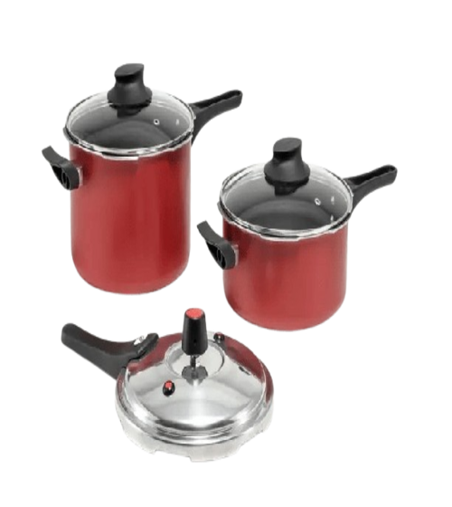
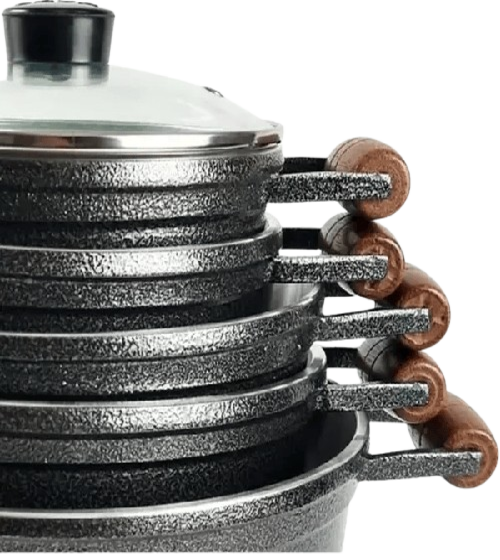
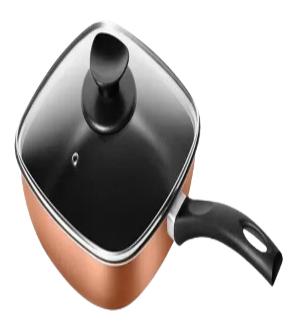

Panela de pressão Marcolar
Detalhes do Produto: Material Externo: Alumínio Material Interno: Teflon Material do Cabo: Baquelite Material da Alça: Baquelite Revestimento: 5 Camadas de Antiaderente Capacidade: 4,5 Litros Fechamento: Externo Válvula de Pressão: Sim Válvula de Segurança: Sim

Jogo de panela cava
As Panelas e Frigideiras de Alumínio Fundido cava possuem excelente qualidade, durabilidade e tem aquecimento rápido. São práticas, fáceis de manusear e limpar, além de seu design moderno.
Sua alta tecnologia assegura distribuição uniforme de calor e devido a sua espessura robusta garante alto desempenho no preparo dos alimentos. Pode ser utilizada em todas as fontes de calor (fogão convencional, industrial e a lenha). As panelas e frigideiras cava são todas fundidas por gravidade, o alumínio é puro, sem adição de outras substâncias na liga metálica o que torna superior a qualidade do material sem contaminação.

Frigideira patolux quadrada
Patolux garante rapidez no preparo graças ao seu formato e seu revestimento proporciona um cozimento muito mais saudável, pois exige baixa utilização de gordura, preservando ainda mais as propriedades nutritivas dos alimentos, ressaltando o sabor de seus pratos.
Contem: Tampa de vidro temperado com borda em aço inox Espessura 1,80 mm Altura 6 cm Diâmetro 21 Cm Capacidade 1,9 Litros
Contem: Tampa de vidro temperado com borda em aço inox Espessura 1,80 mm Altura 6 cm Diâmetro 21 Cm Capacidade 1,9 Litros
![]() 1
1